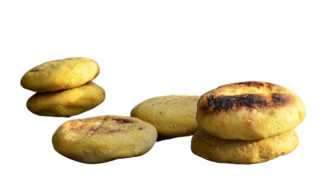

Pre-Columbian Era
Originated from indigenous tribes like Timoto-Cuicas who made
breads using corn
1500s
Spanish colonization brought diary cows and cheese making to the
region
17th to 18th Century
African, European and indigenous cooking techniques and
ingredients together make the present day arepa
